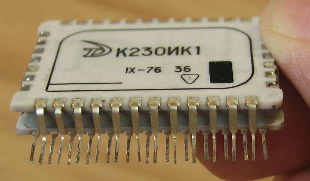

1.11.4. Гибридные интегральные микросхемы
Гибридная микросхема (также микросборка) — кроме полупроводникового кристалла содержит несколько бескорпусных диодов, транзисторов и (или) других электронных компонентов, помещённых в один корпус.
Обычно на диэлектрической подложке Гибридной интегральной микросхемы (ГИС) создают сугубо пассивные детали, например, постоянные резисторы. Активные дискретные компоненты, разработанные для использования в ГИС, не имеют корпусов, а для защиты от пагубного воздействия окружающей среды их покрывают капельками лака или компаунда. Транспортировку активных компонентов осуществляют в специальных контейнерах. Контактные площадки, созданные на подложке ГИС, необходимы для обеспечения взаимных соединений плёночных деталей, а также для подключений тонких проводников, которые осуществляют электрические контакты между тонкоплёночными и внешними дискретными компонентами. Активные компоненты, которые подключают к контактным площадкам, выполняют с жёсткими или с гибкими выводами. Детали с жёсткими выводами наиболее удобны для автоматической сборки ГИС, однако разработка таких изделий связана с определёнными трудностями. Конденсаторы с ёмкостью более 20 нФ и катушки индуктивности обычно не выполняют на подложке ГИС, а задействуют как навесные компоненты. В больших ГИС – сокращённо БГИС – в качестве внешних деталей применяют бескорпусные полупроводниковые микросхемы. Соединение компонентов ГИС с выводами корпуса осуществляют пайкой, микросваркой и т.п.
Подложки ГИС
Подложки ГИС являются диэлектрическим и механическим основанием для пленочных и навесных элементов и служат теплоотводом. Материал подложки должен обладать следующими свойствами и характеристиками:
- высоким сопротивлением изоляции и электрической прочностью;
- большим коэффициентом теплопроводности для эффективной передачи теплоты от тепловыделяющих элементов (резисторов, диодов, транзисторов) к корпусу микросхемы;
- достаточной механической прочностью;
- устойчивостью к воздействию химических реактивов в процессе подготовки поверхности подложки перед нанесением пленок;
- стойкостью к воздействию нагрева в процессе нанесения тонких пленок и термообработки толстых пленок;
- способностью к механической обработке (резке и т.д.).
Элементы ГИС
ГИС состоит из изолирующего основания (подложки), на поверхности которого размещены пленочные элементы (резисторы, конденсаторы, спирали индуктивности, проводники и контактные площадки), а также навесные бескорпусные миниатюрные активные (транзисторы, диоды, полупроводниковые ИМС и БИС) и пассивные (конденсаторы, катушки индуктивности и т.д.) компоненты. Для защиты ГИС помещают в корпус (рис.8.2)
Рис. 8.2. Гибридная микросхема извлеченная из корпуса.
Компоненты ГИС
Компоненты ГИС могут иметь жесткие и гибкие выводы. Недостатком компонентов с гибкими выводами является трудность автоматизации процессов их монтажа и сборки. Применение компонентов с шариковыми выводами затрудняет контроль процесса сборки. Приборы с балочными выводами дороги, но позволяют автоматизировать сборку, контролировать ее качество, увеличить плотность монтажа.
Применение ГИС
В аналоговой аппаратуре ГИС по сравнению с полупроводниковыми ИМС имеют более широкие схемотехнические возможности благодаря использованию различных навесных компонентов (полупроводниковых ИМС, транзисторов, конденсаторов, индуктивных катушек и т.д.). ГИС позволяют реализовать широкий класс функциональных электронных схем – усилителей, преобразователей, коммутаторов, вторичных источников питания, являясь при этом экономически целесообразными в условиях серийного и даже мелкосерийного производства.